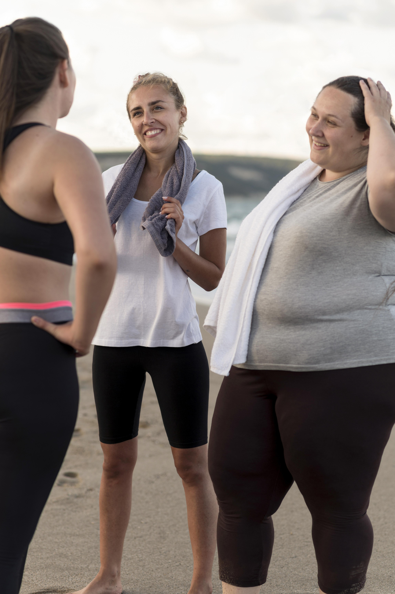

Entrenamiento Especializado
Diseñado para personas con cirugía bariátrica, bypass o balón gástrico
Agenda tu Clase Gratis
Recuperación y Fortalecimiento
Programas personalizados para tu proceso de recuperación
Conoce Nuestros Servicios.jpg)